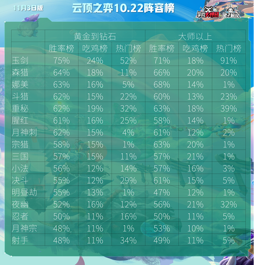
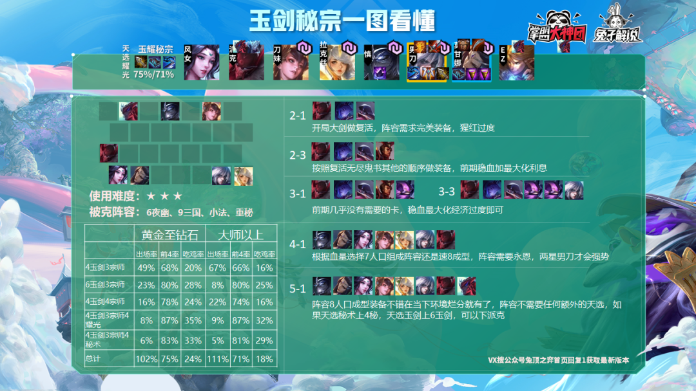
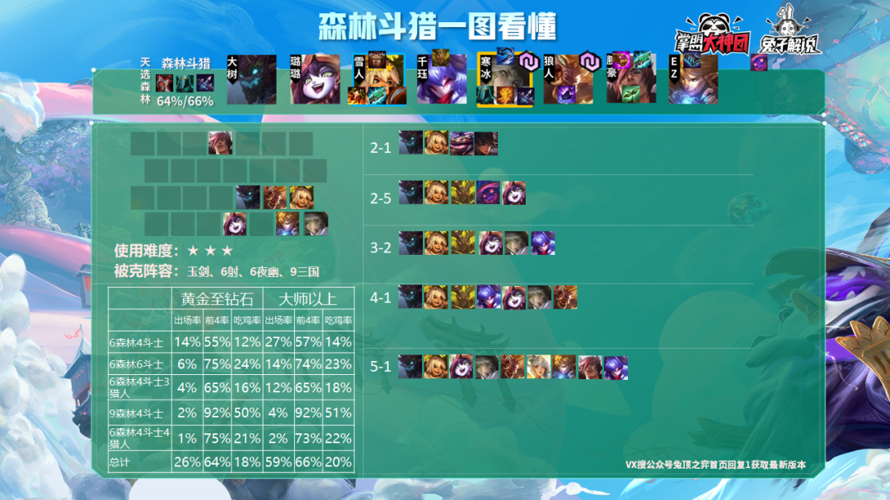
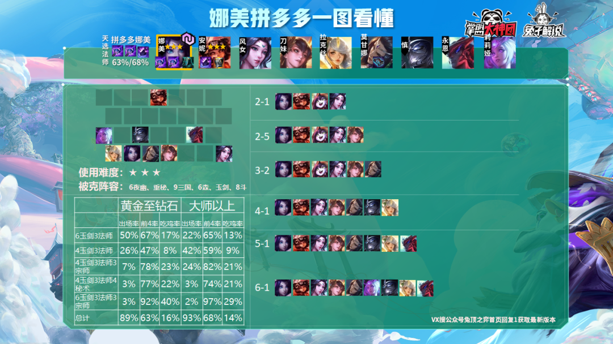

兔子解说 2020-11-03 23:28:31
兔子想制作一个榜单，能够让大家看一眼就知道当下应该玩什么，过去的榜单仅计算了阵容成型之后的平均排名，但是更多的玩家尤其是新手贡献了未成形的数据，于是兔子引入所有阵容的加权平均数，让大家真正一眼看懂什么样的阵容才是最稳定最强的。
兔子制作了全阵容的榜单，无论你是大师以下还是大师以上，都可以一眼看出什么阵容最强，什么阵容强势又相对冷门，什么阵容已经成为了下水道。 榜单选取阵容内所有成型与过度阶段进行加权平均数，让数据更加精准合理，而不仅仅是最终成型的强度。
玉剑秘宗，版本第一套路，即使是热补丁之后，热门度高到可怕的程度，依旧有着碾压级的吃分率和吃鸡率，4耀光、4宗师、4秘术、6玉剑灵活转换，任何一种变化都非常强势。
森林斗猎，一个看起来不强却悄悄爬到第二名胜率榜的套路，虽然打不过版本热门的玉剑，但是克制4夜幽和版本另外的热门重秘，打斗士、决斗也完全不怂，9森林的时候更是版本最强套路之一。
